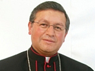

Clero
Vicario Apostólico de Zamora - Obispo
Mons. Walter Heras Segarra
- Parroquia: Zamora
- Celular: 0 994 372 630
- Teléfono: (07) 260 5130, Ext. 102
- Teléfono: (07) 260 5399
- Teléfono: (07) 303 9380
- zamoraobispo2@gmail.com
MONSEÑOR WALTER JEHOVÁ HERAS SEGARRA, O.F.M
25/03/09.- Benedicto XVI ha nombrado vicario apostólico de Zamora (ECUADOR) al padre Walter Jehowá HERAS SEGARRA, O.F.M., ministro provincial y vicepresidente de la Conferencia Ecuatoriana de Religiosos. Le ha sido asignada la sede titular episcopal de Vazari.
Curriculum vitae
El padre Walter Jehová HERAS SEGARRA, O.F.M., nació el 4 de abril de 1964 en Bulán (provincia de Azuay, archidiócesis de Cueca). Después de la escuela primaria local, ingresó en el Seminario Menor de los padres Franciscanos. Estudió Filosofía y Psicopedagogía en la Universidad Politécnica Salesiana, donde consiguió el título de profesor de escuela secundaria, y Teología en la Pontificia Universidad Católica de Quito.
El 22 de septiembre de 1990 emitió la profesión solemne con los Hermanos Menores y el 15 de agosto de 1992 recibió la ordenación presbiteral.
Tras la ordenación ha ocupado los siguientes cargos:
- 1992-1994: vice-maestro de los profesos temporales, vice-rector y profesor de religión en el “Colegio San Andrés” (Quito) y secretario provincial;
- 1994-1997:Estudios en Roma para la Licenciatura en Espiritualidad franciscana por la Pontificia Universidad “Antonianum”;
- 1997-2000: maestro de los profesos temporales y animador vocacional;
- 1997-2003: definidor provincial; secretario provincial para la Formación y los Estudios, ecónomo y secretario de la Facultad Filosófica y Teológica Franciscana “Cardenal Bernardino Echeverría” (Quito);
- 1998: profesor de espiritualidad franciscana y vice-decano de la Facultad de Filosofía y Teología “Cardenal Bernardino Echeverría” (Quito);
- 2000-2003: vicario provincial;
- 2003-2006: presidente de la “Conferencia Bolivariana Franciscana”;
- desde 2003:ministro provincial;
- desde 2005: vicepresidente de la Conferencia Ecuatoriana de los Religiosos.
(Fuente: http://www.radiovaticana.org/spagnolo/nombramientos.html)